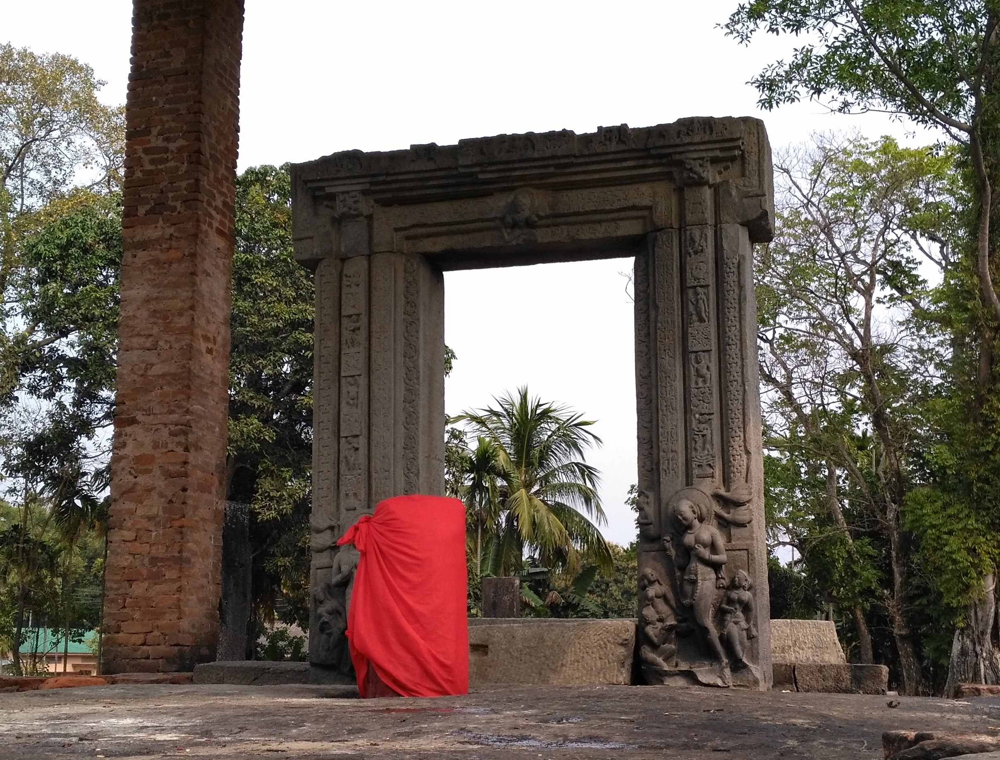

TEZPUR
Welcome to the cultural capital of Assam
About:
Tezpur is a city and urban agglomeration in Sonitpur district, Assam state, India. Tezpur is on the banks of the river Brahmaputra, 175 kilometres northeast of Guwahati, and is the largest of the north bank towns with a population exceeding 100,000 as per Metropolitan Census 2011.
Know More
Important Links:
Watch a video
Photos
Search on map
Contact me

Submitted by:-
Roll no:- BT/IT/17-06
17 BTech IT 71858
created by: BITUPON KOCH